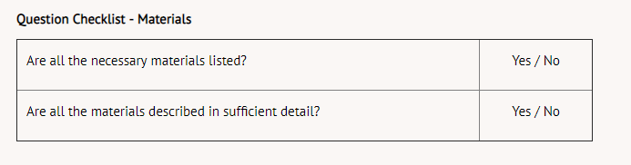

Step 4: Materials
Researchers must make a list of the equipment and materials used in an experiment so that other researchers can accurately replicate the experiment to verify results. Some experiments require many materials while others may require only such items as a stopwatch, pen, and paper. Be as specific as you can when making your list of materials. For example, instead of listing a timer, list a stopwatch with 0.1 second accuracy. If you need water in your experiment, include the amount and the type: 200 mL of distilled water.
Using the response time example from Step One, the materials list might include the following:
* The driving simulator is a full-size model of the front seat of a car. The simulator uses computer software to create virtual driving scenarios. The participants are seated in the simulator and look at a windshield-sized computer monitor. As participants drive, various road conditions are presented and the drivers react as they would in actual driving situations. The simulator records the response rate so no external timing mechanism is required.
** A selection of sandwiches is available to participants.
*** The test subjects are all male, 35 years-old, and of average health, height, and weight. Test subjects are to have eaten to a normal-full extent one hour prior to arriving at the test centre and subjects will have had a full night's sleep.
When preparing your materials list you may want to refer to the checklist below. You will want to answer "yes" to the questions.
